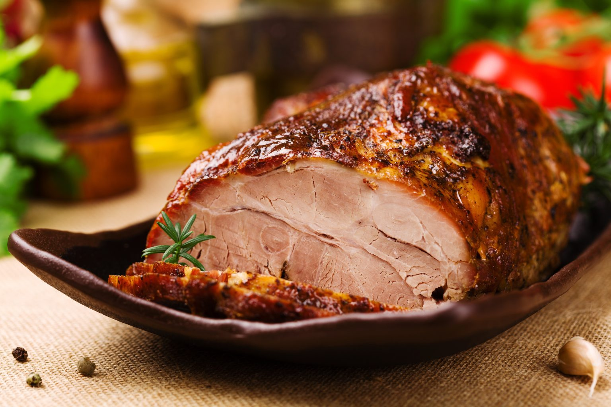

Sirloin with wine

Description
Make this tenderloin delight right now!
Igredients
- 1 kg of pork loin
- 3 minced garlic cloves
- 1 tablespoon chopped rosemary
- 2 bay leaves
- 11/2 cup dry white wine
- lemon juice with using 1 lemon
- Salt and black pepper to taste
- 200g pepperoni sausage cut into sticks
Step by Step
- On a platter season the loin with the garlic minced meat, lemon
juice, rosemary, bay leaf, white wine, salt and black pepper,
grease the meat well, cover and leave in fridge for at least 1
hour marinating.
- Place the loin in a refractory, add the rest of the marinade and
cover with foil.
- Take it to the Air Fryer Mondial Oven roasting pan. On the dashboard,
select the MEAT function, and set the time to 1 hour. Now select
PLAY/PAUSE.
- Remove the foil and return to bake for another 30 minutes at 180°C
.
- Remove the sirloin from the refractory, pass the sauce through a sieve
to remove the pieces. seasonings, take it back to the Air Fryer Mondial
Forno for 5 minutes to give it as slightly thickened and serve over the
loin so that it is very wet.